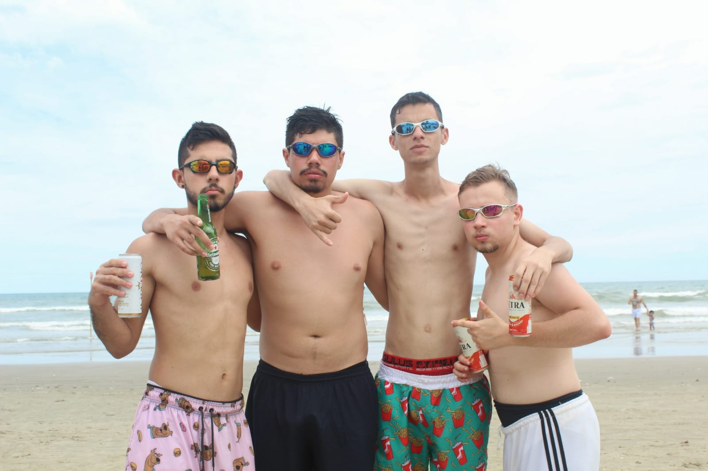

Diretoria
A diretoria é composta pelos membros que criaram o time e que correm atrás das demais questões dele, sejam jurídicas, executivas, de patrocínio, conteúdo, compras, etc. Não só compõe a diretoria, mas também a equipe de atletas que disputa os jogos e campeonatos a fora. É essa parte que cuida da imagem do time, e procura sempre um meio de divulgar e trazer cada vez mais pessoas para a torcida.
A princípio a diretoria era formada por 4 integrantes (os mesmos que fundaram o time), porém, por questões de tempo e prioridades, alguns integrantes acabaram saindo da equipe, fazendo com que sobrassem apenas 2. Esses 2 foram atrás de toda a evolução que vemos no time atualmente. Desde jogadores novos, até patrocínios, logo nova e camisetas representando nossas cores.
Primeira Diretoria 
Após a saída dos dois integrantes, o time ficou um pouco estagnado e as coisas não andavam muito bem com o desfalque. Mas um tempo depois, conseguiram ajeitar novamente as coisas e trazer um integrante novo a equipe, que agregaria não somente aos negócios do time, mas também ao jogo.
A Nova Diretoria
Atualmente a equipe da diretoria é composta por 3 pessoas, sendo elas respectivamente o goleiro (camiseta 1), zagueiro (camiseta 10), e o pivô (camiseta 9).
Haliffer

Felipe
Raphael
Sempre em busca de melhoria, esses três estão constantemente atrás da questões primordiais do time. Com muita cumplicidade, vontade e determinação eles procuram transformar esse time numa das maiores forças futebolísticas da cidade. E o sonho de sermos campeões ficar cada vez mais próximo.